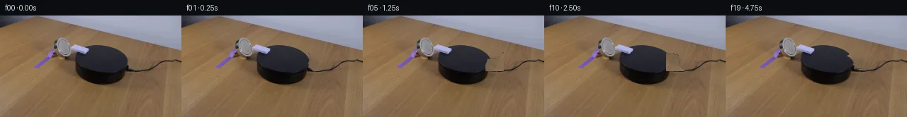

![首帧]()

Round 00
2026-11-05T21:21:52.113463+00:00像素候选变化代码 +96/−0inspection 更新
pixels 0ec6e0497d4f2155 · code d88a5a853fbe3eb3
查看本轮 generate.py 真实 diff
--- previous/generate.py
+++ current/generate.py
@@ -0,0 +1,96 @@
+"""generate.py — Render 20 frames of domino rotating clockwise on black platform."""
+import numpy as np
+from PIL import Image
+from scipy import ndimage
+from pathlib import Path
+
+# --- Load first frame ---
+src = np.array(Image.open("first_frame.png")).astype(np.uint8)
+H, W = 144, 256
+assert src.shape == (H, W, 3)
+
+frames = np.zeros((20, H, W, 3), dtype=np.uint8)
+frames[0] = src.copy()
+
+# --- Domino region (measured from OBSERVATION.md) ---
+# The domino sits on the right side of the black platform.
+# Tight bbox of bright (sum>280) pixels: x=176..196, y=54..74
+# Expanded with padding for rotation:
+bx0, bx1 = 172, 199 # 27 px wide
+by0, by1 = 52, 79 # 27 px tall
+
+# Extract the domino sprite from frame 0
+sprite = frames[0, by0:by1, bx0:bx1].copy() # shape (27, 27, 3)
+
+# Create a boolean mask: which pixels belong to the domino (not dark background)
+# Domino pixels are warm-toned and brighter than the dark platform
+brightness = sprite.sum(axis=2)
+domino_mask = brightness > 180 # threshold between dark platform (~125) and domino (~300)
+
+# Sample the dark platform background from the edges of the sprite region
+# Use the corners and borders that are consistently dark
+bg_corners = []
+for y in range(by1 - by0):
+ for x in range(bx1 - bx0):
+ if not domino_mask[y, x]:
+ bg_corners.append(sprite[y, x])
+bg_corners = np.array(bg_corners)
+bg_color = np.median(bg_corners, axis=0).astype(np.uint8)
+print(f"Background color (median of non-domino pixels): {bg_color}")
+
+# Center of rotation (relative to sprite coordinates)
+cy = (by0 + by1) / 2 - by0
+cx = (bx0 + bx1) / 2 - bx0
+
+# --- Generate frames 1..19 ---
+# Clockwise rotation, ~18 degrees per frame (360/20 = 18)
+# Total rotation over 19 frames: 19 * 18 = 342 degrees (nearly full turn)
+
+for t in range(1, 20):
+ angle = t * 18.0 # clockwise rotation in degrees
+
+ # Rotate sprite and mask clockwise
+ # scipy.ndimage.rotate uses counter-clockwise by default,
+ # so we negate the angle for clockwise
+ rotated_sprite = np.zeros_like(sprite)
+ rotated_mask = np.zeros(domino_mask.shape, dtype=bool)
+
+ for c in range(3):
+ rotated_sprite[:, :, c] = ndimage.rotate(
+ sprite[:, :, c].astype(np.float64),
+ -angle, # negative = clockwise
+ reshape=False,
+ order=1, # bilinear interpolation
+ mode='constant',
+ cval=float(bg_color[c]),
+ prefilter=True
+ )
+
+ rotated_mask = ndimage.rotate(
+ domino_mask.astype(np.float64),
+ -angle,
+ reshape=False,
+ order=0, # nearest neighbor for mask
+ mode='constant',
+ cval=0.0,
+ prefilter=False
+ ) > 0.5
+
+ # Start with the static background (frame 0)
+ frame = src.copy()
+
+ # Composite rotated domino back
+ patch = frame[by0:by1, bx0:bx1]
+ for c in range(3):
+ patch[:, :, c] = np.where(rotated_mask, rotated_sprite[:, :, c], patch[:, :, c])
+ frame[by0:by1, bx0:bx1] = patch
+
… diff truncated; 9 more lines …